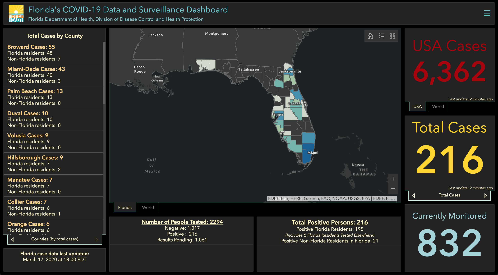

Florida moved to a new dashboard
Issue number 12
olivierlacan opened this issue on March 17, 2020 at 8:24 pm
The currently listed URL http://www.floridahealth.gov/diseases-and-conditions/COVID-19/ now redirects to a domain (floridahealthcovid19.gov) which no longer lists the same data that was previously available on the daily report still published there.
I recommend the new dashboard the report now links to: https://experience.arcgis.com/experience/96dd742462124fa0b38ddedb9b25e429.

Although it visually obfuscates a ton of data it does include the previously listed data:
- number of people tested
- negative tests
- positive tests
- pending results
- currently monitored individuals
It uses the familiar ARCGIS map from JHU.
I’m trying to get familiar with the Ruby crawler to submit a Pull Request right now but perhaps @huuep can update the crawler faster than I can.
With some browsing around, I managed to find and reach out to the maintainer of the new Florida COVID-19 dashboard thanks to its About page: https://fdoh.maps.arcgis.com/home/item.html?id=8d0de33f260d444c852a615dc7837c86
The page itself is helpful to interpret some of the data. I think it’s more likely she’ll respond to me than the FDOH Twitter account or email so here’s hoping we’ll get some improvements in data released tomorrow.
Thanks @olivierlacan! We were also excited to see this dashboard show up: https://twitter.com/COVID19Tracking/status/1239780238013292545. We use this site for data collection internally, but the external link is intended to take users to the COVID-19 landing page for each state, so I think we’ll keep it as is.
FYI I emailed and tweeted at the Florida Department of Health (ESF14@em.myflorida.com) to ask them to follow the Best Practices document. I’m hoping they improve their releases over the next few days.